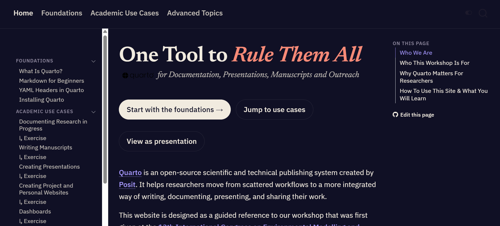
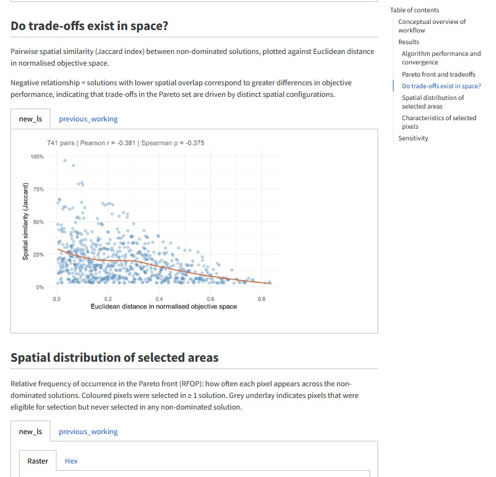
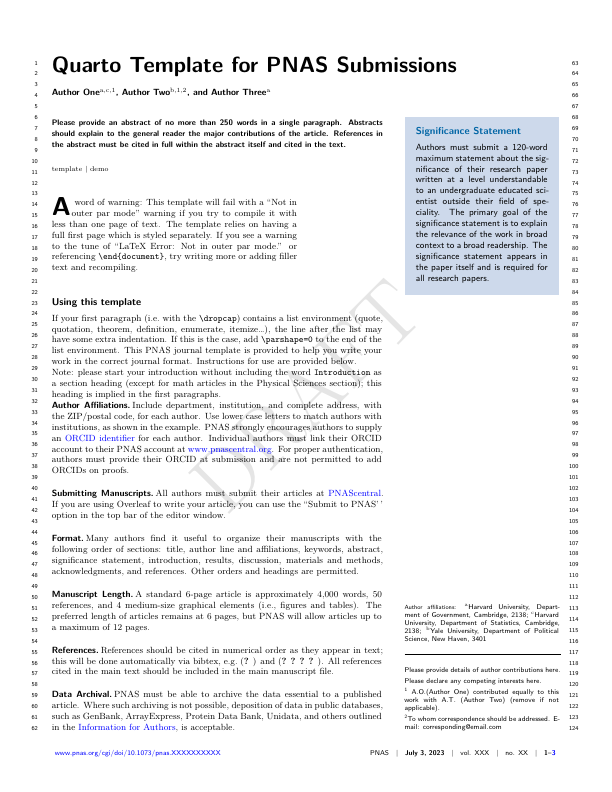
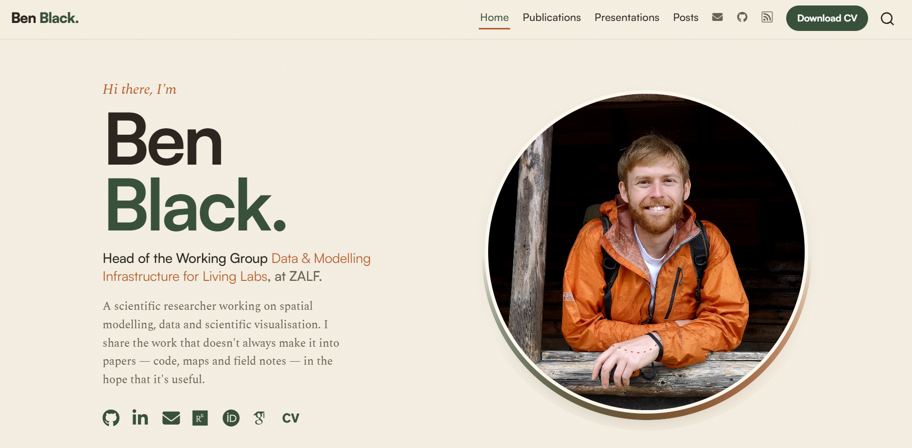
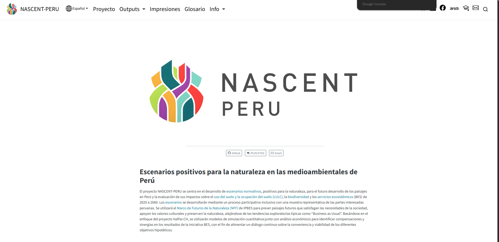
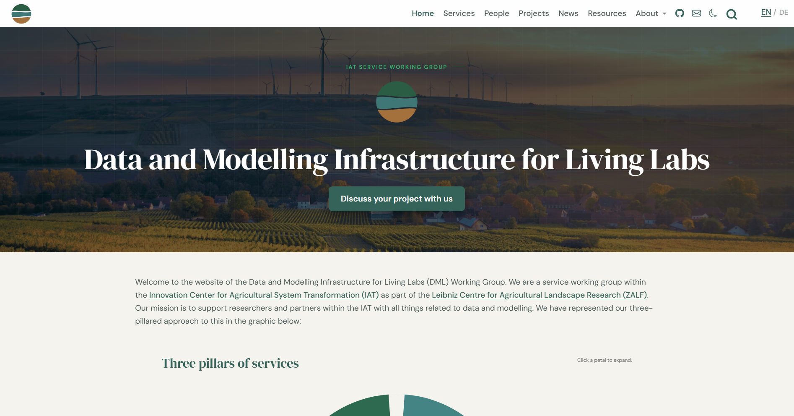
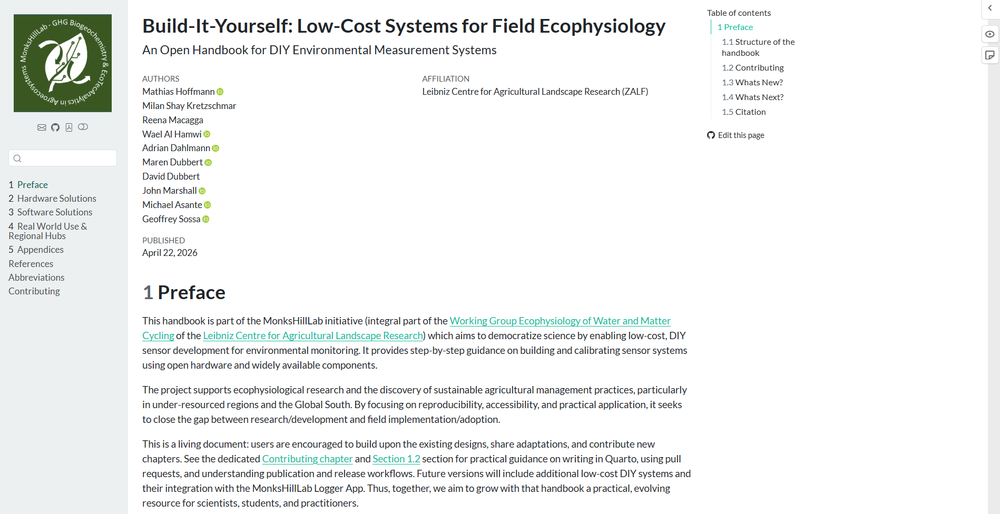

One Tool to Rule Them All
for Documentation, Presentations, Manuscripts and Outreach
Workshop Website
https://iat-dml.github.io/quarto-workshop/

Who We Are

Ben Black
Head of the group Data and Modelling Infrastructure for Living Labs
Leibniz Centre for Agricultural Landscape Research (ZALF)
Isabel Nicholson-Thomas
Doctoral Researcher at Planning of Landscape and Urban Systems (PLUS)
ETH Zürich
Manuel Kurmann
Research Assistant at Planning of Landscape and Urban Systems (PLUS)
ETH Zürich
Why ?
- Research produces many related outputs: Notes, manuscripts, slides etc.
- These are usually made with disconnected tools and manual formatting
- Quarto lets you write once in plain text, render to HTML, PDF, DOCX, slides, and more
- Focus on content, not juggling tools
Workshop Structure
- Foundations — Quarto, Markdown, YAML
- Academic use cases:
Research Diary
Documenting your research in a reproducible way from the very beginning.
Manuscripts
Write in plain text; render to PDF, HTML, or DOCX, then share with collaborators.
Presentations
Build reveal.js talks from the same source as your research.
Websites
Project, lab, and personal websites to improve outreach.
Dashboards
Interactive dashboards for exploring and communicating your research.
Each use case has a guided exercise which you will have time to test today.
- Advanced Topics: Templates, multi-lingual outputs, consistent branding, AI assistance and more
Foundations
What Is ?
- Open-source scientific publishing system from Posit
- The multi-language, multi-format successor to R Markdown
- Three ingredients in one
.qmdfile:- YAML for metadata and configuration
- Markdown for written content
- Code chunks (R, Python, Julia, OJS) for computation
Key Benefits
- Plain text: every change is a visible, trackable line (version control friendly)
- One source, many outputs: HTML, PDF, DOCX, slides from the same file
- Executable code: results are computed at render time, not pasted in
- Familiar if you know LaTeX, but simpler markup and more output formats
Markdown in 30 Seconds
- Lightweight syntax for structure: headings, lists, links, images, emphasis
# Title,## Section,**bold**,*italic*,[link](url)- Quarto adds academic extras: citations, cross-references, callouts, figures with captions
- Mindset: describe what things are, let the renderer handle how they look
YAML: Configuring Your Document
- The block between
---fences at the top of a file - Controls title, authors, date, output format, and options
- Key : value pairs; indentation matters
- Same content, different YAML = different publication
Use Cases
Research Diary
- Capture what you tried, what worked, and why you made decisions
- Markdown headings separate entries by date or experiment
- Code chunks put data checks and figures right beside your notes
- Render to HTML for browsing, PDF for archiving
- Durable, shareable, searchable plain text

Manuscripts
- Narrative, citations, figures, and tables in one reproducible document
- HTML/DOCX for collaborators, PDF/LaTeX for journal submission
- Numerous citation methods: from DOI or direct integration with Zotero and databases like CrossRef and PubMed
- Templates for popular journals available (quarto-journals)
- Inline code chunks pull statistics straight from your data: no stale numbers
Manuscripts

Bonus: papers written in Quarto can be easily combined into a cumulative thesis
Presentations
- reveal.js: web-native, viewable in any browser
- Reuse figures, tables, and citations from your other
.qmdfiles - Embed interactive content: live code, diagrams, iframes
- Export to PowerPoint or PDF when required
- 11 built-in themes, or create your own CSS branding
- Caveat: not the tool for slides requiring a lot of manual graphics design/manipulation.
Presentations
Websites
- Full websites from the same Markdown + YAML you already know
- Free hosting via GitHub Pages or Netlify
- Great for personal researcher profiles, lab pages, project sites, teaching materials
Websites

Personal academic profile A researcher’s personal homepage, profile, and publication list.
NASCENT-Peru A multi-lingual research project website.
Academic group website A research group’s homepage, with team, projects, and outputs.
LCSfFE Handbook A web version of an instructional guide for building field monitoring systems.Websites
Dashboards
format: dashboardturns a.qmdinto a visual overview page- Headings define rows; cards hold value boxes, charts, and tables
- Interactive in the browser with no server: Plotly charts, sortable tables, tabsets
- Limit: real reactivity (recomputing on input) needs Shiny and a server
Dashboards
A Quick Demo
Wrap-Up
- One System, Many Outputs: Research diary, manuscript, slides, website, dashboard, all are possible using the same content
- Same skills everywhere: Markdown + YAML + code chunks + a sprinkling of CSS
Now It’s Your Turn
- Start with the foundations, then pick the use case you want to try today
- More detailed introductory material and exercises can be found on the website:
Before You Start: Installing Quarto
- One install unlocks every output format
- You may already have it: Quarto ships with RStudio and Positron
- Any editor works; RStudio, VS Code, and Positron support
.qmdout of the box - You are ready when
quarto checkreports a working setup - Step-by-step guide on the workshop website; questions? Ask us, or see quarto.org